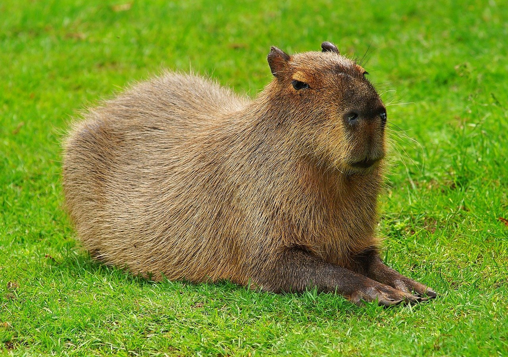
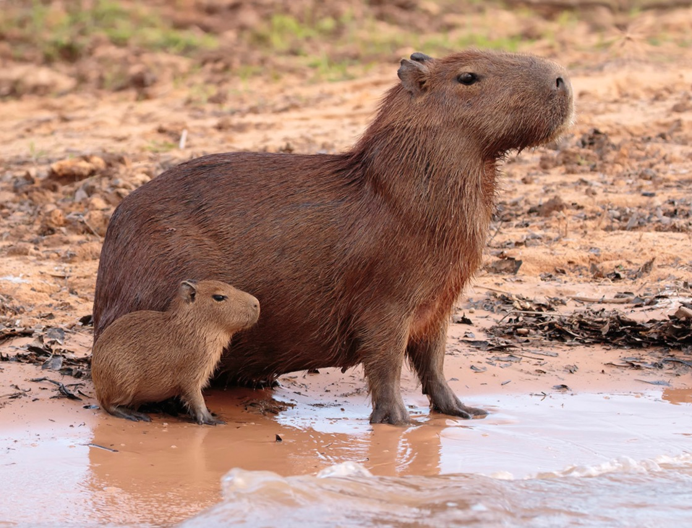

Кто же такие капибары?
Капибары — это полуводные млекопитающие, которые считаются самыми крупными грызунами в мире. Название животных берет начало от слова ka’apiûara, что с языка бразильских племен тупи можно перевести как «поедатель тонкой травы». Научное название Hydrochoerus hydrochaeris с греческого переводится как «водяная свинья». Длина тела капибар может достигать 1 метра, а масса равняться 60 килограммам.

В чем смысл капибары?
Капибара - это слово на американском сленге используется для обозначения тех людей, кто ведёт себя абсолютно спокойно со всеми, серьёзно, капибары тусуются с грёбаными крокодилами, это самые хладнокровные животные на планете.

Почему капибару так назвали?
Название животного берёт начало от слова ka’apiûara, что на мёртвом языке тупи (родственном языку индейцев гуарани) буквально означает «поедатель тонкой травы» (kaá (трава) + píi (тонкий) + ú (есть) + ara (суффикс, аналогичный русскому суффиксу -тель)). В наиболее близкой к оригиналу форме capivara оно вошло в португальский язык и широко употребимо в Бразилии.
